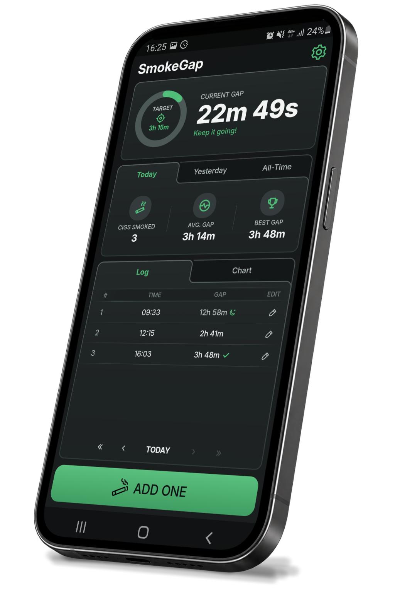

Track every gap
Log cigarettes in seconds and automatically see the time between each one.
Independent app studio
Waru Studio builds focused apps designed to help people track, improve and change everyday habits.
SmokeGap
Track the gap.
Now on Android
SmokeGap helps you track the time between cigarettes, understand your smoking patterns and gradually increase your gaps.
Reduce at your own pace, see your progress over time and move toward quitting when you’re ready.
Get SmokeGap on Google Play ↗
Built for steady progress
Log cigarettes in seconds and automatically see the time between each one.
Use your previous progress as a simple target and gradually extend the time between cigarettes.
Follow your average gap, best gaps and long-term trend with clear stats and charts.
Your tracking data stays focused on your own progress and daily use.
No complicated plans. Log, compare and keep moving forward.
SmokeGap is built around gradual improvement rather than all-or-nothing goals.
A path that is yours
SmokeGap is designed to support gradual reduction and can transition with you as your goal changes from smoking less to going smoke-free.
Waru Studio
Waru Studio creates focused mobile apps with simple interfaces, practical features and as little friction as possible. SmokeGap is the first public release.
Support
Read our privacy policy.